contribution/abstract
- 收集并标记了当前最大的非监督domain adaptation（UDA）数据集DomainNet。
- 6个域——domain数量更多
- 0.6million张图像——图像数量更多
- 345类——类别数量更多
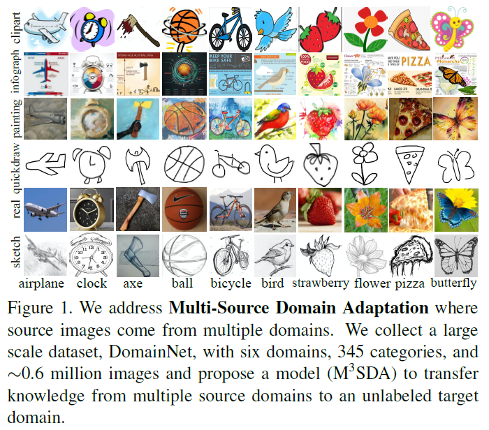
提出全新的$M^3SDA$方法(Moment Matching for Multi-Source Domain Adaptation)，该方法通过动态对齐moments of feature distribution，将多个source迁移到target。
拓展了moment matching方法的理论证明。
1. Introduction
single source方法
- 传统UDA方法：MMD距离嵌入神经网络[27, 41, 25]
- aligning source and target second order correlation[39, 32],
- moment matching [47]
- adversarial domain confusion [40, 8, 38]
- GAN-based alignment[50, 15, 23].
multi-source domain adaptation(MSDA)方法
- multi-source理论分析[1, 28, 4, 49, 14]
- 应用工作：use an adversarial discriminator to align the multi-source domains with the target domain[6, 45]
datset方面的问题
- lack of large-scale domain adaptation datasets
- 图像数量少
- 类别少
- 在这些数据集上，模型准确率高—-saturation饱和
2. related work
2.1 Domain Adaptation Datasets
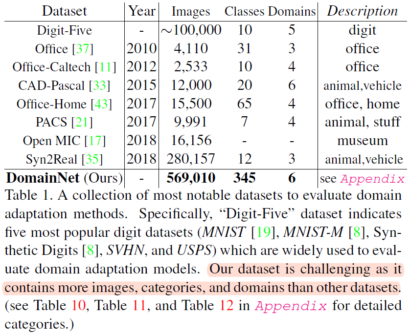
2.2 Single-source UDA
3类single source的domain adaptation方法：
2.2.1 discrepancy-based DA approach
Maximum Mean Discrepancy (MMD) is applied to reduce distribution shift in various methods基于MMD距离的方法
- DaNN：【9】 Domain adaptive neural networks for object recognition.
- DDC：【41】
- JAN：【27】
- 【44】Visual domain adaptation with manifold embedded distribution alignment
其他的度量方法：
correlation alignment[39, 32]
Kullback-Leibler (KL) divergence [51]
- H divergence [1]
2.2.2 adversarial-based approach
A domain discriminator is leveraged to encourage the domain
confusion by an adversarial objective.
- Among these approaches, generative adversarial networks are widely used to learn domain-invariant features as well to generate fake source or target data.
- Other frameworks utilize only adversarial loss to bridge two domains.
【24】Ming-Yu Liu and Oncel Tuzel. Coupled generative adversarial
networks. In Advances in neural information processing
systems, pages 469–477, 2016. 2
【40】Eric Tzeng, Judy Hoffman, Kate Saenko, and Trevor Darrell.
Adversarial discriminative domain adaptation. In Computer
Vision and Pattern Recognition (CVPR), volume 1, page 4, 2017 1, 2, 6, 7, 8
2.2.3 reconstruction-based approach
假设数据重建能帮助DA模型学习领域不变的特征。
- encoder-decoder[3, 10]
- GAN discriminator
- such as GAN [46]
- cycle-GAN [50]
- disco-GAN [16]
- Cy-CADA [15]
2.3 Multi-Source Domain Adaptation
理论分析
[1] 引入$\cal H \Delta \cal H$-divergence作为不同source的weights
[4] establish a general bound on the expected loss of the model by minimizing the empirical loss on the nearest k sources
[28] 表明target的假设可以用source的假设加权表示出来。
应用
[45] Deep Cocktail Network(DCTN)用于数字识别和实际目标检测
[14]
[6] Domain Selection Machine用于用户视频事件识别
2.4 Moment （矩）Matching
用于度量不同分布之间的差异
- MMD：matches the first moments of two distributions（一阶矩？？？）
- 二阶矩【39】
- align infinte-dimensional covariance matrices in RKHS【48】
- 高阶矩Central Moment Discrepancy (CMD).【47】
- GAN-based moment matching approaches【29,22,20】
3. The DomainNet dataset
6个domain，每个有345类
- Clipart剪贴画
- Infograph信息图
- Painting艺术画
- Quickdraw简笔画
- Real真实场景图像
- Sketch素描图
图2分别展示了：
- 每个类别的样本在各个domain上的分布，竖着看，可以看到各个类别基本在每个domain都是有一定的分布的。
- 每个domain的大类的分布，即每个域大概都有哪些类，看同一个颜色，可以看出domain是有差异的。
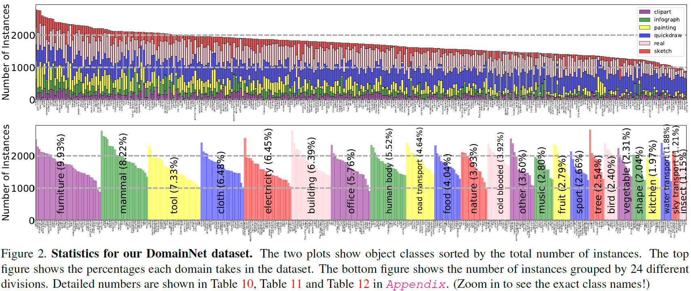
4. Moment Matching for Multi-Source DA
4.1 setup
source domain:
target domain：
无标签——unsupervised $\mathcal{D}_T$
从source加上target这一共$N+1$个domain里，独立同分布采样$N+1$次，得到样本集合$N+1$个：
定义Moment Distance距离为：
可以看到，距离由两部分组成：
- 每个source和target的差异
- 每两个source之间的差异
4.2 M^3SDA
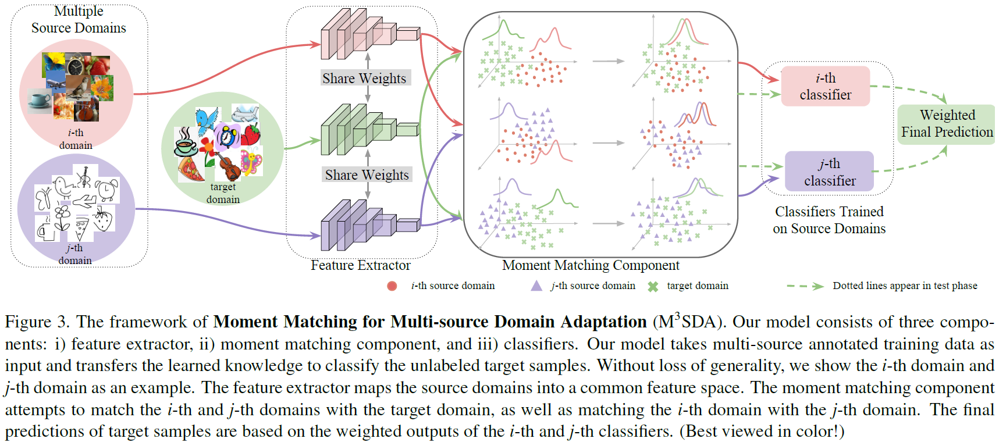
模型3部分：
- feature extractor $G$：将source域$\mathcal D_S$和target域$\cal{D}_T$都map到共同特征隐空间。
- moment matching component：中间一行表示希望将第i和第j个source域匹配起来；上行表示希望将第i个source域和target匹配起来；下行表示希望将第j个source域和target匹配起来。
- 匹配即是最小化（1）式所示的moment-related距离。
- 这个过程也就是找到最小化距离的feature extractor $G$
- classifiers：不同source在标签的source数据集上训练，用cross-entropy损失，出来一共$N$个分类器$\mathcal C=\{C_1,C_2,…,C_N\}$，经过weight之后得到最后的target的预测结果。
overall objective function
其中$\cal L_{D_i}$表示在第i个source域上的分类器的softmax cross entropy loss
4.3 M^3SDA-β
motivation
- M^3SDA假设对齐（匹配）了$p(x)$后，条件概率$p(y|x)$就自动同时对齐了。实际中并不总是成立。
- 本节$\beta$方法同时对齐边缘概率分布和条件概率分布。
main idea
- 参考【38：Maximum Classifier Discrepancy for Unsupervised Domain Adaptation】的训练范式，我们在每个source域上定义一对分类器，即：
- 【38】根据对抗adversarial的思想，domain classifier（discriminator判别器）和feature generator（生成器）是用来对齐分布的。
- 【38】source和target样本都是相同的feature生成器的输入，生成器的输出（feature），被判别器和task-specific的分类器共享。
- 判别器训练来分辨生成器生成的特征对应的域标签
- 而生成器进行对抗训练，以使判别器无法分辨
- 生成器的目标是匹配source和target的分布，因为这样能够使生成的特征相似，从而判别器难以分辨source和target，也就是在source上训练的判别器，也可以判别来自target的特征，——假设task-specific的分类器可以正确分类来自target的特征。
3步训练周期进行直到整个网络收敛：
训练特征提取器$G$和分类器对$\cal C ^\prime$来正确分类每一个source的样本；
固定$G$，训练分类器对，使得每一对分类器在target上的分类结果差异最大。根据【38】，也就是在最小化分类loss的同时，使每个source得到的一对分类器对target的分类结果相差最大，可以表示为：
固定分类器对，训练$G$，即训练得到不同的特征分布，使得可以最小化每一对分类器在target上的分类结果差异，优化目标可以表示为：
根据38原文，参考过程示意图如下，是对任意一个source：
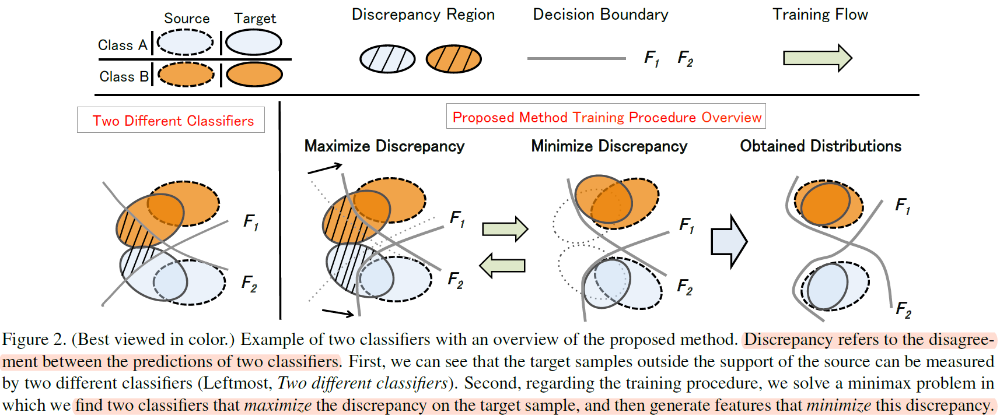
4.4 Ensemble Schema整合架构
测试阶段，测试数据的结果要整合N个分类器的输出：
对分类器输出取平均，记为$M^3SDA^{∗}$
加权 $\mathcal W = (w_1,…,w_{N-1})$ ，假设第$N$个是target域。
每个分量应该都是衡量source和target的域的固有的相似性（closeness）的。
我们这里简单认为， 在source上准确率高的，应该分配更高的权重，因为更值得信任（好像跟closeness没有啥关系）
4.5 Theoretical Insight
we introduce the k-th order cross-moment divergence between domains
5. Experiments
5.1 Digit Recognition
dataset
- 5 digit datasets: MNIST, SVHN, MNIST-M, Sythetic Digits, USPS
- 前4个进行采样处理。
- 5个轮流挑一个出来作为target，剩下的作为source。
baseline
discrepancy-based approaches
Deep Adaptation Network [25] (DAN)
Joint Adaptation Network (JAN)
Manifold Embedded Distribution Alignment (MEDA）
Correlation Alignment [39] (CORAL)
adversarial-based approaches
- Domain Adversarial Neural Network [8] (DANN)
- Adversarial Discriminative Domain Adaptation [40] (ADDA)
- Maximum Classifier Discrepancy (MCD)
- Deep Cocktail Network [45] (DCTN)
baseline的source combine是直接把多个source加在一起作为single-source
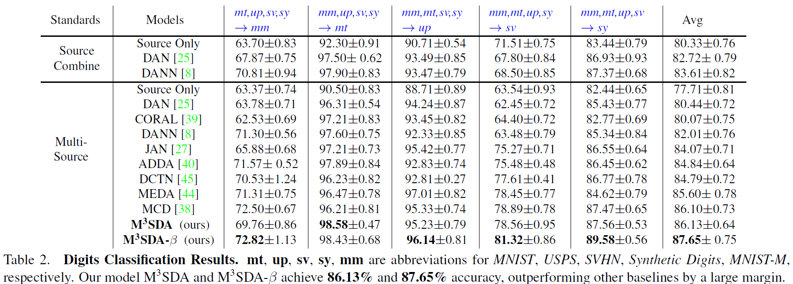
MNIST-M数据集上结果偏低，可能是因为出现了负迁移[31]。
5.2 OfficeCaltech10
10 object categories from 4 different domains: Amazon, Caltech, DSLR, and Webcam.
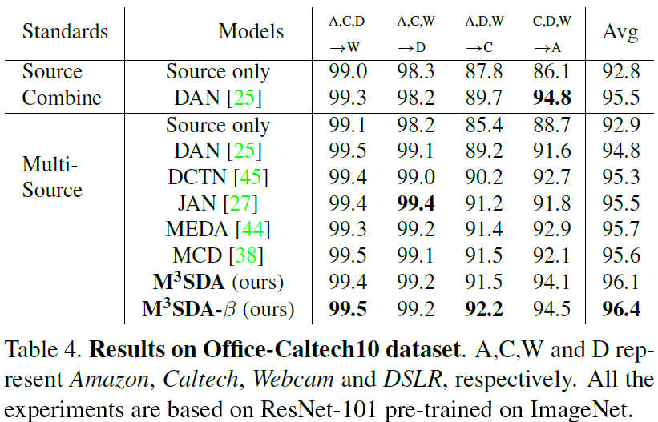
AlexNet的结果没有ResNet-101好。
5.2 DomainNet
5.3.1 Single-Source Adaptation
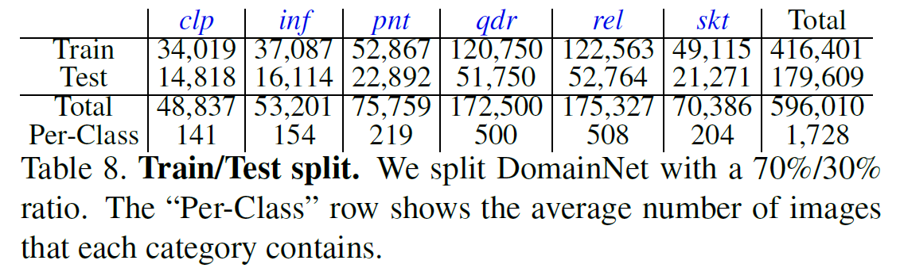
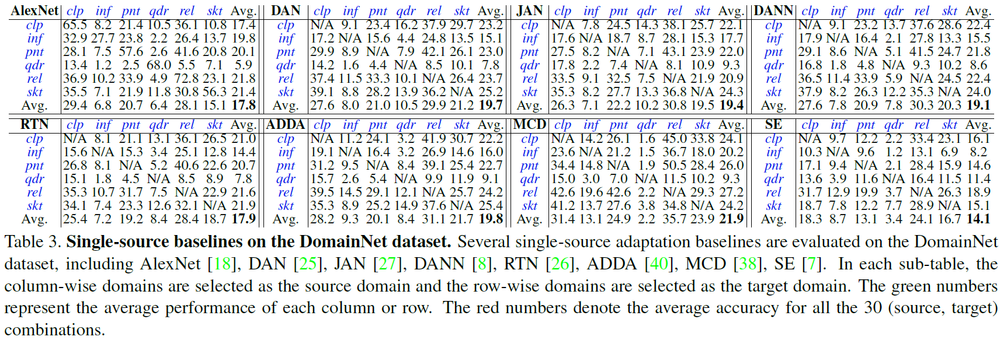
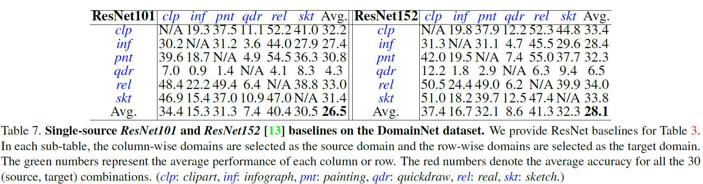
infograph和quickdraw domain识别率低。
5.3.2 Multi-Source Domain Adaptation
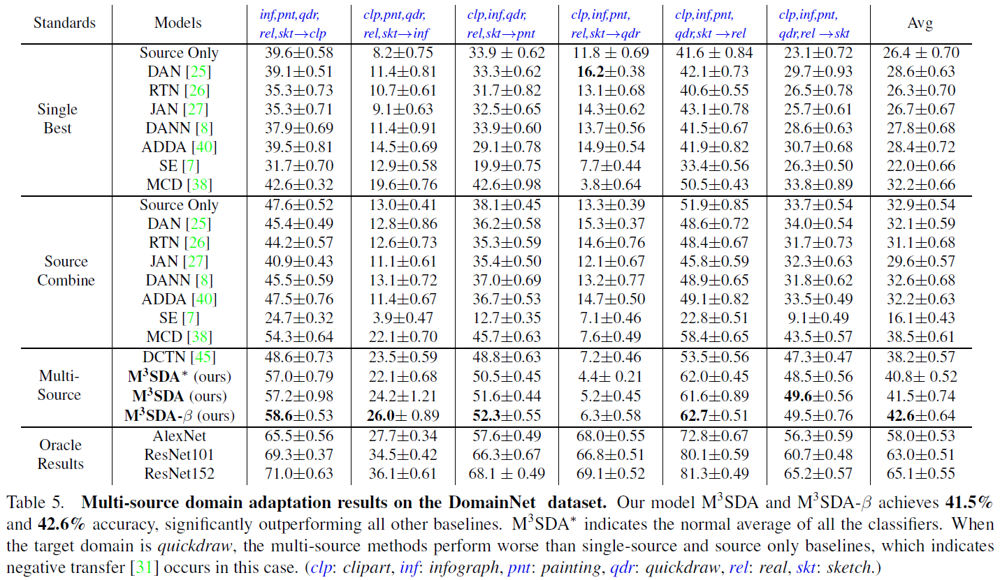
其中single-best是前面DomainNet的单个source实验中，各自表现最好的结果。
source combine是5个source直接combine成一个。
Effect of Category Number
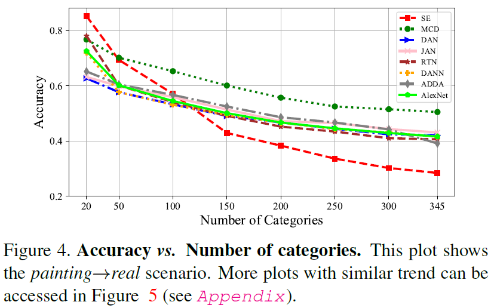
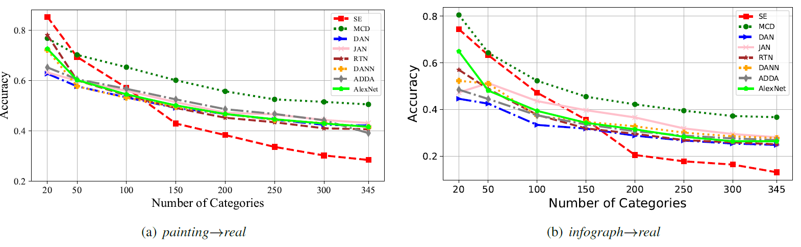
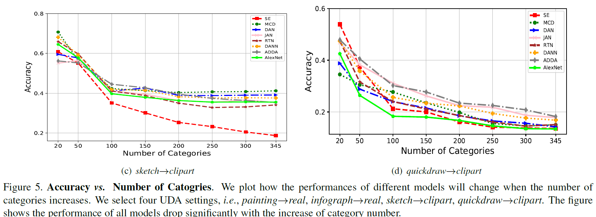
类别数量增多，效果都有下降。
6. Conclusion
- 本文收集并分析了数据集DomainNet
- 提出$M^3SDA$